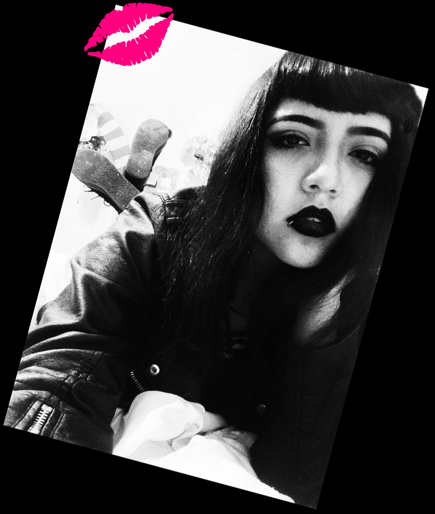

INICIO
ALGO
SOBRE MÍ
Yurián ♥ 24 años ♥ CDMX
Front-End Developer Jr / Autodidacta / Intuitiva / Amante de los 60's
Hacer música y cantarla, escribirles y leerlos,
dibujarme y todo lo que veo, por fin poder crear lo que tenga en mente con nuevas herramientas que he aprendido y que estoy por aprender.
Interés en el diseño, la animación y UX, ¡creatividad!, propuesta, aporte, apertura, arriesgar y atreverme.
Seguir aprendiendo todo lo que pueda, impulsarme, crecer y hacer crecer, aprovechar oportunidades, compartir, nutrirme de los demás, ser mejor para servir y crear efecto en otros...
Y.
